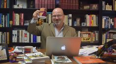

Rhetoric(TT) 3:30-4:45. Projected Grade: A
Professor: Dr. Buddy Howell
Contact information: Phone: (540)231-7163 E-Mail: hbuddy4@vt.edu
Dr.Howell is in the Deparment of Communication. He has a Ph.D. from Texas A&M University, M.A. from Baylor University and B.A. from Baylor University. Dr.Howell has a great deal of research interests which include “Reagan and the U.S.-Soviet Summits: Public Diplomacy, Humanity’s Dignity, and Soviet Communism’s Depravity.” “Margaret Thatcher: The ‘Iron Lady’ and ‘Feminization’ of the Cold Warrior”. Dr. Howell teaches Rheotric, communication skills, intro to comm studies and persuasion.
Course Description:
This course is broken down into three exams and three quizzes. The exams are weighted as 20% each so 60% total. The quizzes are weighted as 12% each so 36% total. Reading out of the textbook is most of the out of class work. The textbook for this particular course is James A. Herrick, The History and Theory of Rhetoric: An Introduction, 6th ed. The grading scale is A-F normal scale. The actual material looks at the history of rhetoric, the philosphers who built rheotric, those who opposed the study and how to perfect the study.
Course Opinion:
I personally enjoy this class because there isn't that much busy work to do. You go to class and Dr.Howell gives you a presentation on the material then you go home and study. Dr. Howell gives you a study guide around test time and you are pretty much already prepared. I think it's simple and you still learn the material. The quzzies are a little tough beacuse they are done in class over a powerpoint so that is most likely my least favorite part of the course. The material is interesting and informative. It shines a light on how we as a society communicate in many different aspects including law, poltics, in sport and socially. I enjoy Rhetoric.